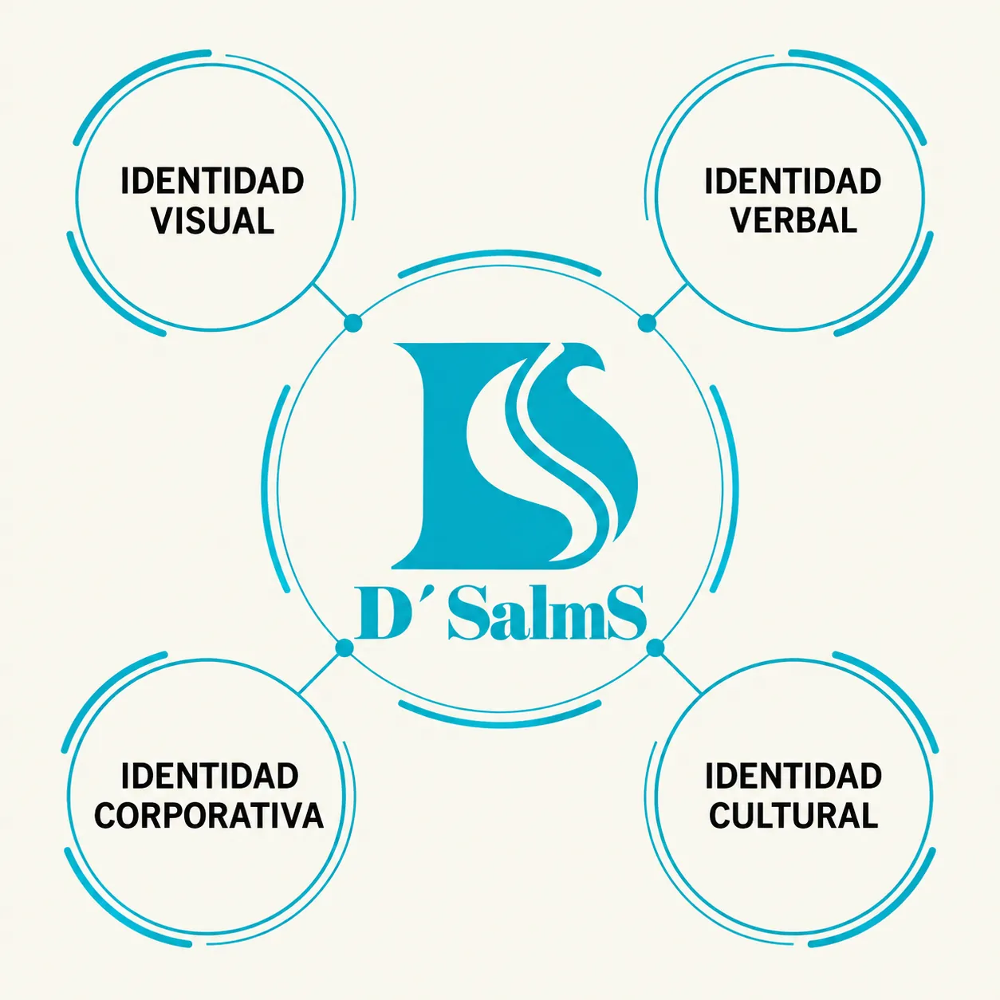
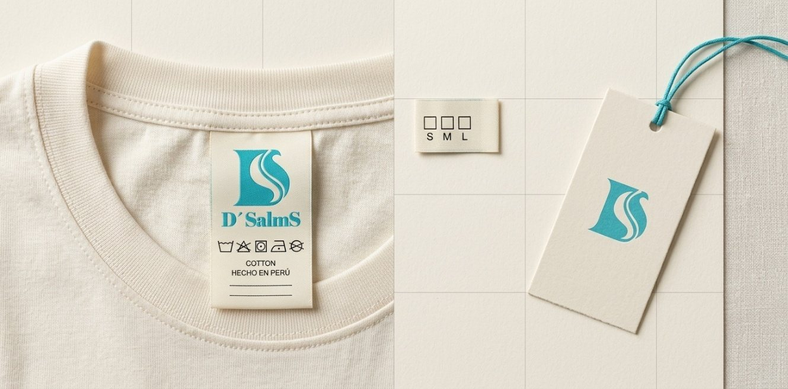
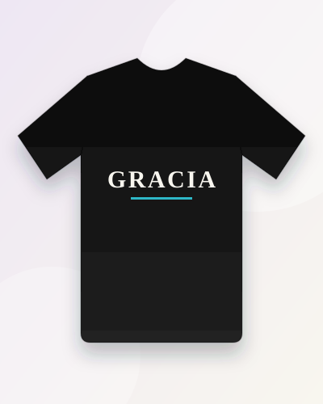
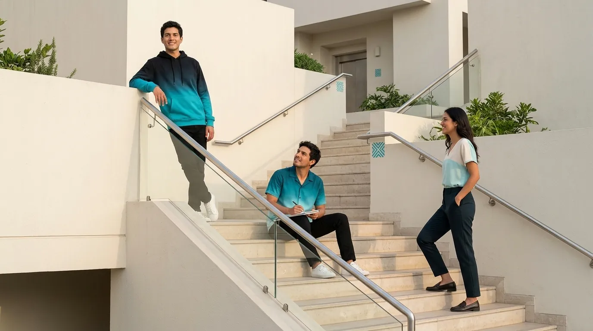
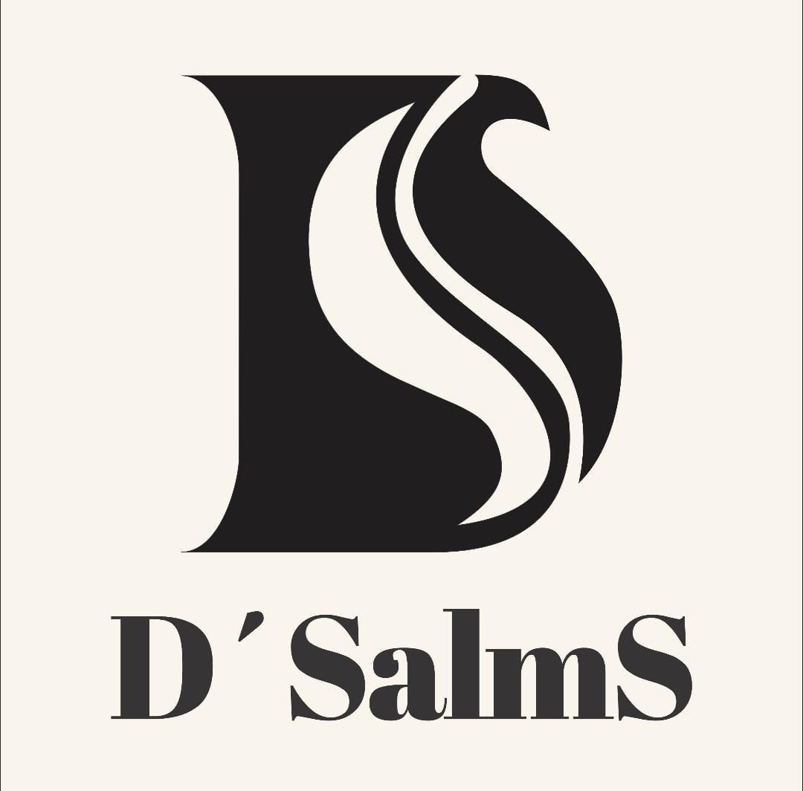
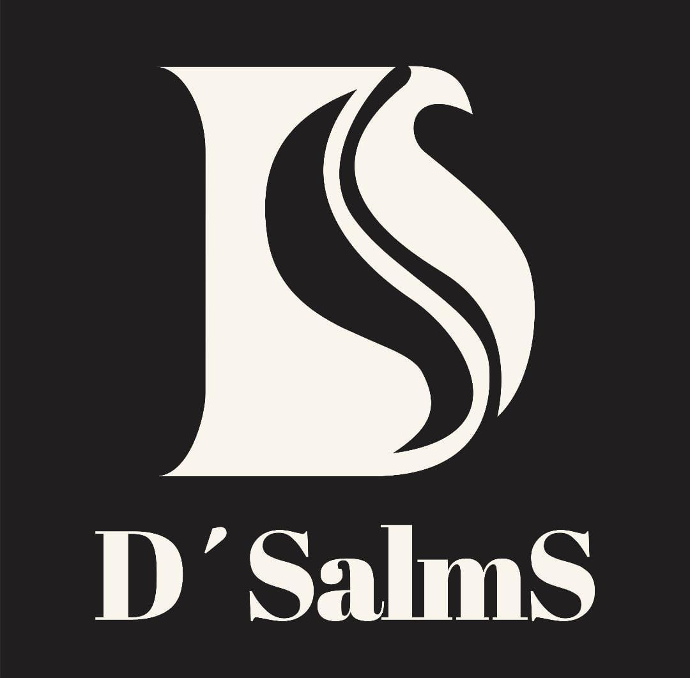

10 · ¿Coincide lo que proyectamos con lo que se percibe?
Auditoría de Imagen Corporativa
Una investigación académica presentada de forma visual: seis capítulos, ejemplos específicos de D'Salms y una simulación claramente identificada. Ninguna actividad de campo se afirma como realizada.
Estados:ConfirmadoPropuestaPendiente de evaluaciónEstudio académico
01
Necesidad de la investigación
D'Salms ya definió su identidad: nombre, logotipo, colores, tipografías y mensaje. La auditoría pregunta algo distinto: ¿lo que la marca quiere proyectar coincide con lo que su público podría percibir? Mientras no se compruebe, esa coincidencia es una hipótesis.
Objetivo general Propuesta
Evaluar la imagen corporativa de D'Salms para identificar oportunidades de mejora que contribuyan a fortalecer su identidad visual, comunicación y presentación de productos.
Siete objetivos específicos
01Analizar el logotipo y sus aplicaciones.
02Evaluar la consistencia cromática y tipográfica.
03Conocer la percepción de clientes potenciales.
04Revisar las fotografías y materiales publicitarios.
05Evaluar la claridad de los mensajes.
06Identificar fortalezas y debilidades.
07Formular propuestas de mejora.
Identidad deseada frente a percepción por comprobar
Identidad que D'Salms desea proyectar Confirmado

Identidad que desea proyectar
Marca moderna, juvenil, creativa, inspiradora, cercana y auténtica.
Moda cristiana contemporánea: «Viste tu esencia».
Concepto MODA + FE + IDENTIDAD + CREATIVIDAD.
VS
Percepción que la auditoría buscaría comprobar Pendiente de evaluaciónPercepción
¿Reconocen el logotipo y lo asocian con la marca?
¿Perciben modernidad sin que la fe se sienta recargada?
¿El mensaje y las fotografías transmiten calidad?
Aún no se ha comprobado ninguna percepción: la columna derecha es la pregunta de la investigación, no un resultado.
02
Proceso de auditoría de la imagen
Cinco etapas encadenadas. Elige una para ver su método, un ejemplo específico de D'Salms y su visualización.
Explicación académica
Revisa los elementos que forman la identidad: nombre, logotipo y símbolo D+S, eslogan, colores, tipografías, valores, prendas y aplicaciones.
Objetivo
Verificar que la identidad definida se aplica de forma uniforme.
Método
Observación directa con lista de verificación.
Ejemplo D'Salms
Evaluar si el turquesa #2DB7C7 aparece de manera consistente en catálogo, etiquetas, publicaciones y página web.
Evidencia que se analizaría
Cuatro piezas: logo, etiqueta, publicación y empaque.
Posible mejora
Documentar el color y la tipografía de cada aplicación.
Logo sobre fondo cremaProporción · color · espacio libre

Etiqueta de prendaTurquesa #2DB7C7 · tipografíaPublicación de redesMismo turquesa · legibilidadEmpaqueLogotipo visible · coherencia
Criterio común: ¿el turquesa #2DB7C7 y las tipografías Kalnia y DM Sans se ven iguales en las cuatro piezas? Se propone comparar, no se afirma ninguna diferencia.
Estado del ejemplo: Propuesta
Explicación académica
Estudia cómo las personas podrían interpretar la identidad: qué recuerdan, qué sienten y qué entienden.
Objetivo
Conocer la percepción de clientes potenciales.
Método
Encuesta, entrevista, evaluación de imágenes, preguntas de reconocimiento y asociación de conceptos.
Ejemplo D'Salms
Mostrar a cinco participantes del ejercicio dos propuestas de presentación y pedir que valoren modernidad, claridad y coherencia.
Evidencia que se analizaría
Respuestas en escala 1–5 y comentarios breves.
Posible mejora
Ajustar mensajes según lo que se entienda menos.
P119 años
P223 años
P328 años
P421 años
P534 años
Presentación A

Presentación B
Modernidad 1 2 3 4 5
Claridad 1 2 3 4 5
Coherencia 1 2 3 4 5
Cinco participantes del ejercicio valorarían dos presentaciones. El detalle y los resultados simulados están en el capítulo 4.
Estado del ejemplo: Estudio académico
Explicación académica
Examina cómo se presenta la marca ante el público: web, catálogo, fotografía, redes, packaging, publicidad, fachada conceptual y atención digital.
Objetivo
Comprobar si la presentación comunica el posicionamiento deseado.
Método
Revisión visual y comparación de piezas.
Ejemplo D'Salms
Comparar dos fotografías conceptuales de un polo (A: fondo desordenado y poca luz; B: fondo neutro y buena luz).
Evidencia que se analizaría
Fotografías de catálogo y redes.
Posible mejora
Establecer una guía fotográfica común.
Fotografía B
Fotografía A
Ejemplos de diseño para explicar el criterio: no son pruebas de una campaña existente. La fotografía B comunica mejor el posicionamiento deseado porque la prenda es la protagonista, el fondo es neutro y la luz es suave.
Estado del ejemplo: Propuesta
Explicación académica
Compara la imagen de D'Salms con marcas de moda de segmentos semejantes usando criterios definidos.
Objetivo
Ubicar a D'Salms frente a referencias del sector.
Método
Matriz de criterios con evidencia visual.
Ejemplo D'Salms
Comparar D'Salms con dos marcas conceptuales de referencia en siete criterios.
Evidencia que se analizaría
Capturas y observaciones de marcas reales (por recopilar).
Posible mejora
Adoptar buenas prácticas sin copiar identidades.
Criterio
D'Salms
Marca conceptual A
Marca conceptual B
Reconocimiento visual
●●●●●
●●●●●
●●●●●
Calidad fotográfica
●●●●●
●●●●●
●●●●●
Presentación de productos
●●●●●
●●●●●
●●●●●
Identidad verbal
●●●●●
●●●●●
●●●●●
Organización del catálogo
●●●●●
●●●●●
●●●●●
Experiencia digital
●●●●●
●●●●●
●●●●●
Uso de redes sociales
●●●●●
●●●●●
●●●●●

Estudio académico Las valoraciones son ilustrativas y las marcas A y B no existen: sirven para enseñar cómo se llenaría la matriz.
Estado del ejemplo: Estudio académico
Explicación académica
Integra los hallazgos de las etapas anteriores en un diagnóstico priorizado.
Objetivo
Convertir la evidencia en acciones concretas.
Método
Tabla de diagnóstico con impacto y prioridad.
Ejemplo D'Salms
Problema hipotético: las fotografías de distintas categorías tienen iluminación inconsistente. Recomendación: una guía fotográfica.
Evidencia que se analizaría
Resultados de las cuatro etapas (aún por obtener).
Posible mejora
Ejecutar y volver a medir.
Aspecto
Evidencia necesaria
Hallazgo hipotético
Impacto
Propuesta
Prioridad
Estado
Fotografías con iluminación inconsistente entre categorías
Catálogo de todas las categorías
Hallazgo hipotético: la presentación varía entre polos, hoodies y camisas
Alto
Crear una guía fotográfica (fondo, encuadre, iluminación, retoque, proporción)
Alta
Pendiente de evaluación
Mensaje principal poco visible
Páginas web y publicaciones
Hallazgo hipotético: el eslogan aparece solo en algunas piezas
Medio
Incluir «Viste tu esencia» de forma consistente
Media
Propuesta
Descripciones de producto desiguales
Fichas de catálogo
Hallazgo hipotético: longitud y tono distintos
Medio
Unificar plantilla de descripción
Media
Propuesta
Guía fotográfica
Definir fondo crema, luz suave a 45°, encuadre frontal y prenda al 70 % del cuadro.
Plantilla de descripción
Nombre, línea, concepto, colores y mensaje en el mismo orden.
Eslogan visible
«Viste tu esencia» en cabecera, pie y piezas clave.
Estado del ejemplo: Pendiente de evaluación
03
Desarrollo del plan de investigación
Planteamiento del problema Propuesta
Determinar si la identidad visual y la comunicación de D'Salms son coherentes con las expectativas de su público objetivo.
Metodología: enfoque mixto
Encuesta
Valoraciones cuantitativas.
Ejemplo Escala de 1 a 5 sobre identidad y presentación.
La paleta me parece atractiva 1 2 3 4 5
Entrevista
Opiniones cualitativas.
Ejemplo «¿Qué cambiaría en la presentación de D'Salms para que su propuesta se comprenda mejor?»
¿Qué cambiaría en la presentación para que se comprenda mejor?
Observación
Revisión visual de aplicaciones.
Ejemplo Lista de revisión de coherencia de colores y tipografías.
Color turquesa uniforme
Tipografías correctas
Logo con espacio libre
Análisis digital
Evaluación de la web y los canales.
Ejemplo Menú, claridad de la información, fotografía y experiencia móvil.
Menú claro
Fotografía consistente
Móvil sin desbordes
Población y muestra
Población propuesta: jóvenes y adultos que forman parte del público objetivo de D'Salms.
Muestra didáctica: cinco participantes del ejercicio. No representan estadísticamente a todos los clientes. Estudio académico
Actividades
Definir objetivos
Preparar instrumentos
Aplicar instrumentos (cuando corresponda)
Organizar datos
Analizar
Diagnosticar
Recomendar
Cronograma académico de cuatro semanas
Semana 1Planificación
Semana 2Recolección prevista
Semana 3Análisis previsto
Semana 4Informe y recomendaciones
Cronograma referencial: ninguna de estas actividades se ha ejecutado. Pendiente de evaluación
Resultados esperados
Reconocimiento visual
Evaluación de coherencia
Preferencias de presentación
Comprensión del mensaje
Oportunidades de mejora
Son resultados que se esperan obtener, no datos obtenidos.
04
Estudio académico de percepción de D'Salms
Estudio académico Datos. Los datos corresponden a cinco participantes del ejercicio académico usados para ejemplificar el análisis de percepción. No constituyen resultados de una encuesta real.
Cada participante respondió cinco preguntas en una escala del 1 (muy baja) al 5 (muy buena). Elige un participante para ver sus respuestas.
Participante 1 · 19 años
Reconocimiento visual4.0
Colores corporativos5.0
Diseño de prendas4.0
Claridad de comunicación3.0
Presentación web4.0
Participante 2 · 23 años
Reconocimiento visual3.0
Colores corporativos4.0
Diseño de prendas5.0
Claridad de comunicación3.0
Presentación web3.0
Participante 3 · 28 años
Reconocimiento visual5.0
Colores corporativos4.0
Diseño de prendas4.0
Claridad de comunicación4.0
Presentación web4.0
Participante 4 · 21 años
Reconocimiento visual2.0
Colores corporativos5.0
Diseño de prendas3.0
Claridad de comunicación2.0
Presentación web3.0
Participante 5 · 34 años
Reconocimiento visual4.0
Colores corporativos5.0
Diseño de prendas5.0
Claridad de comunicación4.0
Presentación web5.0
Matriz de respuestas simuladas, escala 1 a 5
Participante
Reconocimiento visual
Colores corporativos
Diseño de prendas
Claridad de comunicación
Presentación web
P1
4
5
4
3
4
P2
3
4
5
3
3
P3
5
4
4
4
4
P4
2
5
3
2
3
P5
4
5
5
4
5
Promedio
3.6
4.6
4.2
3.2
3.8
Promedio por dimensión
Reconocimiento visual3.6
Colores corporativos4.6
Diseño de prendas4.2
Claridad de comunicación3.2
Presentación web3.8
Escala de 0 a 5. Estudio académico
Promedios
3.6Reconocimiento visual
4.6Colores corporativos
4.2Diseño de prendas
3.2Claridad de comunicación
3.8Presentación web
3.88Promedio de las 25 valoraciones (sobre 5)
Interpretación del ejercicio Estudio académico
Dentro de este ejemplo, la combinación de colores obtiene la mayor valoración simulada (4.6) y la claridad de comunicación la menor (3.2). Se sugeriría trabajar los mensajes y la presentación verbal. No es evidencia real de posicionamiento.
Comentarios ilustrativos (simulados)
P1 Estudio académico
«Me gusta la combinación turquesa y crema; el mensaje de marca podría destacar más.»
P2 Estudio académico
«Los polos tienen un estilo moderno, pero sería útil explicar mejor cada diseño.»
P3 Estudio académico
«La propuesta visual transmite creatividad y una identidad diferente.»
P4 Estudio académico
«Me gustan los colores, aunque algunas secciones podrían explicar mejor qué representa la marca.»
P5 Estudio académico
«Las prendas y la presentación me parecen atractivas; conservaría esa línea gráfica.»
Recomendaciones derivadas del ejercicio
Fortalecer la claridad del mensaje principal.
Unificar las descripciones de productos.
Mejorar la visibilidad del logotipo.
Incorporar más ejemplos de comunicación.
Continuar desarrollando la línea gráfica de prendas.
Realizar una encuesta real antes de formular conclusiones definitivas.
Recordatorio: los cinco participantes y sus respuestas sons. No representan una encuesta de campo ni resultados generalizables.
05
Proceso de autoanálisis de la imagen
Siete miradas internas, cada una con un ejemplo visual, una recomendación y un estado.
Revisar logo, colores, tipografías, productos y aplicaciones. Se comparan cuatro aplicaciones del imagotipo para verificar proporciones, colores y legibilidad.
PrincipalProporción original

Variante negraArchivo oficial

Crema sobre negroArchivo oficialEjemplo incorrectoEstirado: no usar
Recomendación concreta
Crear una hoja de verificación de usos del imagotipo y corregir cualquier aplicación que lo deforme.
Estado: Propuesta
Comparar una publicación que solo muestra una prenda con otra que incorpora nombre, concepto y mensaje claro.
Publicación A: solo prenda
Publicación B: nombre, concepto y mensaje
Camisa Horizonte
Degradado inspirado en el horizonte. Viste tu esencia.
Recomendación concreta
Incluir siempre nombre del producto, idea de diseño y el eslogan.
Estado: Propuesta
Comparar una respuesta demasiado breve con una respuesta clara, cordial y útil.
Respuesta demasiado breve
¿Cuánto cuesta?
Escríbenos.
Respuesta clara, cordial y útil
¿Cuánto cuesta?
¡Hola! Gracias por escribirnos 😊 Aún no tenemos precios publicados. Cuéntanos qué prenda te interesa y te ayudamos con la información disponible.
Recomendación concreta
Usar respuestas guía por situación (consulta, catálogo, desacuerdo, cierre).
Estado: Estudio académico
Revisar una página de producto en escritorio y en móvil con cuatro puntos de evaluación.
Escritorio
12
Móvil
34
Menú claro y visible
Fotografía consistente
Botones con tamaño táctil
Texto legible sin desplazamiento lateral
Recomendación concreta
Revisar cada página en ambos formatos antes de publicar.
Estado: Pendiente de evaluación
Distinguir lo que ya está definido de lo que aún debe evaluarse.
Elementos definidos
Nombre, eslogan y concepto
Logotipo y paleta oficiales
Tipografías Kalnia y DM Sans
Tono de voz
Necesidades pendientes de evaluar
Consistencia fotográfica
Calendario de contenidos
Indicadores de seguimiento
Fotografías reales de producto
Recomendación concreta
Convertir cada necesidad pendiente en una tarea con responsable.
Estado: Pendiente de evaluación
Análisis hipotético de crecimiento digital, nuevas colecciones, competencia y tendencias.
Oportunidades (hipótesis)
Crecimiento digital en redes
Nuevas colecciones y líneas
Alianzas con comunidades juveniles
Riesgos (hipótesis)
Competencia y tendencias cambiantes
Saturación publicitaria
Mensajes mal interpretados
Recomendación concreta
Monitorear tendencias y definir una colección cápsula de prueba.
Estado: Pendiente de evaluación
Desarrollar una guía de fotografía para que todos los productos compartan una línea editorial.
Con guía (ejemplo)
Antes (ejemplo)
Comparador ilustrativo de estilos fotográficos.
Fondo crema liso
Luz suave a 45°
Encuadre frontal centrado
Retoque mínimo de color
Prenda al 70 % del cuadro
Recomendación concreta
Aplicar la guía a todo el catálogo y revisarla cada trimestre.
Estado: Propuesta
06
Conclusiones
Esta auditoría se encuentra en etapa de diseño académico. Para no confundir evidencia con suposiciones, cada conclusión se clasifica.
Evaluaciones realizadas
Ninguna evaluación de campo se ha realizado todavía.
Pendiente de evaluaciónObservaciones verificables
La identidad definida (logotipo, colores, tipografías, eslogan y tono) existe y es verificable en la web y en los archivos de marca.
ConfirmadoHipótesis
La claridad del mensaje y la consistencia fotográfica podrían ser las áreas con más margen de mejora.
Pendiente de evaluaciónResultados esperados
Conocer la percepción, identificar fortalezas y debilidades, y priorizar mejoras.
PropuestaPropuestas de mejora
Guía fotográfica, plantillas de descripción, eslogan visible, ejemplos de comunicación y una encuesta real.